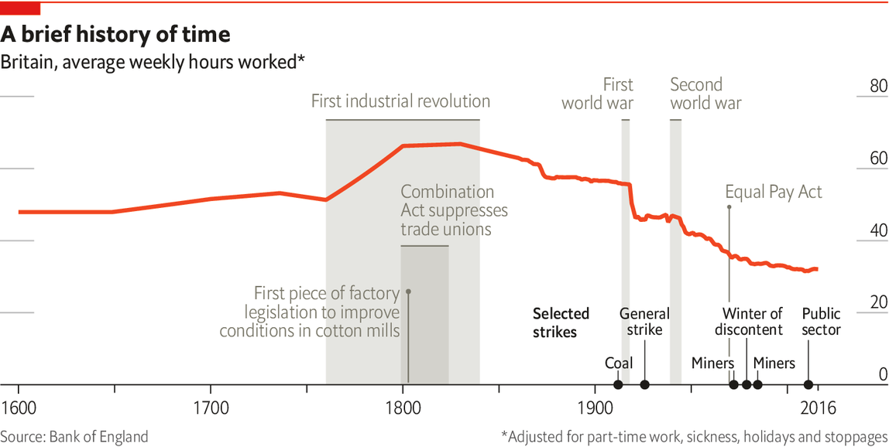
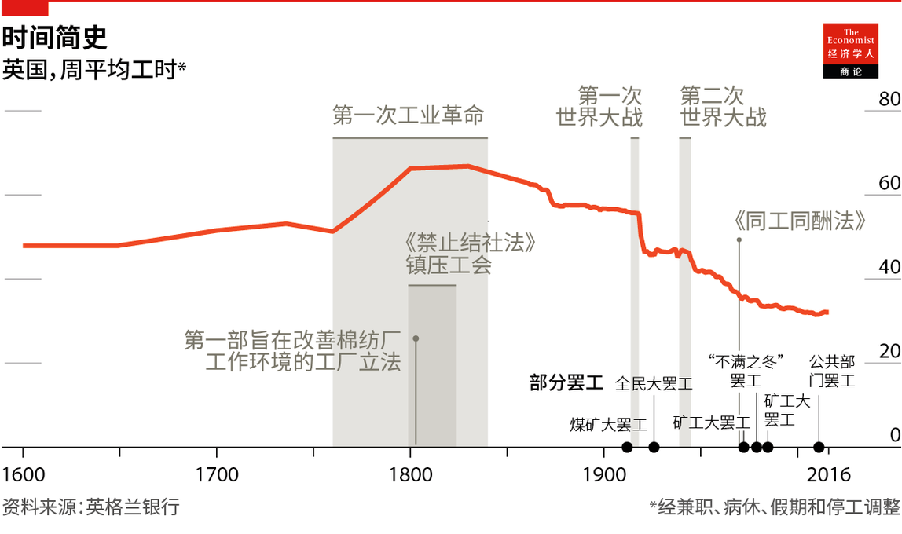

Text
2021-01-07T15:08:48+00:00
Economies past
经济的往昔
經濟的往昔
Factories and families
厂与家
廠與家
Working from home had its advantages, even in the 18th and 19th centuries
就算在18和19世纪，在家工作也有其优势
就算在18和19世紀，在家工作也有其優勢

SALLY BROWN, who was born in Vermont in the early 1800s, had a typically varied schedule for a working woman of the time. As her diary shows, one day she is finishing stockings; another she is milking a cow; another she is refining wool. All of her jobs were done from home.
莎莉·布朗（Sally Brown）于19世纪初出生在佛蒙特州。她的日程安排总是变来变去，带有那个时代职业女性的鲜明特点。她的日记显示，今天她在对长筒袜做最后的加工，明天在挤牛奶，隔天又在梳理羊毛。她所有的活都是在家完成的。
莎莉·布朗（Sally Brown）於19世紀初出生在佛蒙特州。她的日程安排總是變來變去，帶有那個時代職業女性的鮮明特點。她的日記顯示，今天她在對長筒襪做最後的加工，明天在擠牛奶，隔天又在梳理羊毛。她所有的活都是在家完成的。
The shift from offices to kitchen tables among white-collar workers in 2020 seems unprecedented, and only possible with Slack and Zoom. But it is nothing new. Indeed, the history of home-working suggests some surprising parallels with today.
白领们在2020年这一年从办公室转移到了餐桌，这似乎前所未有，而且好像没了Slack和Zoom不行。但这并不是什么新鲜事。事实上，居家工作的历史跟今天有一些惊人的相似之处。
白領們在2020年這一年從辦公室轉移到了餐桌，這似乎前所未有，而且好像沒了Slack和Zoom不行。但這並不是什麼新鮮事。事實上，居家工作的歷史跟今天有一些驚人的相似之處。
The emergence of capitalism in Britain and elsewhere from the 1600s to the mid-19th century did not take place primarily in factories, but in people’s houses. Workers made everything from dresses to shoes to matchboxes in their kitchens or bedrooms. When Adam Smith wrote “The Wealth of Nations” in 1776, it was perfectly common to work from home. Smith famously described the operation of the division of labour in pin-making, but not in a dark, satanic mill. He was describing a “small manufactory” of perhaps ten people—which could well have been in or attached to somebody’s house.
从17世纪头十年到19世纪中叶资本主义于英国和其他地方兴起时，它并不主要发生在工厂，而是在人们的家里。工人在厨房或卧室里制作从衣服、鞋子到火柴盒的各种东西。亚当·斯密在1776年写下《国富论》时，在家工作司空见惯。斯密对扣针生产过程的劳动分工有过著名的描述，但它并不发生在黑暗、邪恶的工厂中，而是一个十个人左右的“小制造厂”——它很可能就在某人的房子里，或者紧挨着某人的房子。
從17世紀頭十年到19世紀中葉資本主義於英國和其他地方興起時，它並不主要發生在工廠，而是在人們的家裡。工人在廚房或卧室里製作從衣服、鞋子到火柴盒的各種東西。亞當·斯密在1776年寫下《國富論》時，在家工作司空見慣。斯密對扣針生產過程的勞動分工有過著名的描述，但它並不發生在黑暗、邪惡的工廠中，而是一個十個人左右的“小製造廠”——它很可能就在某人的房子里，或者緊挨着某人的房子。
It is not easy to put exact numbers on how many people have worked from home during different historical periods. Even in Britain, where economic data reach farther back than in any other country, little reliable labour-force data exist until the mid-1800s. Other sources left clues, however. One relates to the meaning of the word “house”. Today it connotes domesticity. But up until the 19th century it had a much broader definition, with the suffix “-house” encompassing economic production, too. In “A Christmas Carol”, Scrooge works in a “counting-house”. Architecture offers other hints. In Britain, many 18th-century houses still have unusually large upstairs windows; cloth-weavers, who worked there, needed as much light as they could get.
不同的历史时期都有多少人在家工作？对此很难给出确切的数字。即使是在经济数据统计比其他任何国家都要久远的英国，也是直到1805年前后才开始有可靠的劳动力数据。不过，其他地方留下了线索。其中之一与“房子”（house）一词的意思有关。今天这个词会让人想起家庭生活，但在19世纪前它的意思要宽泛得多，“-house”这个后缀的意思也涵盖经济生产。《圣诞颂歌》（A Christmas Carol）中的斯克鲁奇（Scrooge）就是在一个“账房”（counting-house）里工作。建筑也留下了其他证据。在英国，许多18世纪建造的房子楼上仍有着异常大的窗户：当时在里面工作的织布工需要尽可能多的光线。
不同的歷史時期都有多少人在家工作？對此很難給出確切的數字。即使是在經濟數據統計比其他任何國家都要久遠的英國，也是直到1805年前後才開始有可靠的勞動力數據。不過，其他地方留下了線索。其中之一與“房子”（house）一詞的意思有關。今天這個詞會讓人想起家庭生活，但在19世紀前它的意思要寬泛得多，“-house”這個後綴的意思也涵蓋經濟生產。《聖誕頌歌》（A Christmas Carol）中的斯克魯奇（Scrooge）就是在一個“賬房”（counting-house）里工作。建築也留下了其他證據。在英國，許多18世紀建造的房子樓上仍有着異常大的窗戶：當時在裡面工作的織布工需要儘可能多的光線。
Around 1900 French administrators took the lead in asking people about their place of work, not only what they did. They found that one-third of France’s manufacturing workforce worked from home. Danish surveys around the same time found that a tenth of the total workforce did so full-time at home. These research efforts took place at the high point of the factory-based system of production; in previous decades the share of home-working would have been far higher. According to one estimate for America, using official data, in the early 1800s more than 40% of the total workforce laboured from home. Only by 1914 did the majority of the labour force work in an office or factory.
大约在1900年，法国行政人员率先调查人们的工作地点，而不仅仅了解他们的工作内容。他们发现法国有三分之一的制造业劳动力在家工作。丹麦大约在同一时间开展调查，发现所有劳动力中有十分之一全职在家工作。这些研究发生时正值基于工厂的生产制度发展的最高点，在此前的几十年里，在家工作的人的比例还要高得多。运用官方数据对美国的一项估计显示，在19世纪头几年，总劳动力中超过40%的人在家工作。一直要到1914年，大部分劳动人口才在办公室或工厂里工作。
大約在1900年，法國行政人員率先調查人們的工作地點，而不僅僅了解他們的工作內容。他們發現法國有三分之一的製造業勞動力在家工作。丹麥大約在同一時間開展調查，發現所有勞動力中有十分之一全職在家工作。這些研究發生時正值基於工廠的生產制度發展的最高點，在此前的幾十年里，在家工作的人的比例還要高得多。運用官方數據對美國的一項估計顯示，在19世紀頭幾年，總勞動力中超過40%的人在家工作。一直要到1914年，大部分勞動人口才在辦公室或工廠里工作。
The emergence of an at-home industrial workforce had two main causes. The growth of global trade and the rise in per-person income from the 1600s onwards raised demand for manufactured goods such as woollens and watches. But the emerging new technology was more suited to small-scale working than large-scale factories (the spinning jenny, the machine which kickstarted the industrial revolution, was not invented until the 1760s). Homes were the obvious place to be.
在家工作的工业劳动力的出现有两个主要原因。进入17世纪后，全球贸易和人均收入的增长提高了对毛织品和手表等制成品的需求。但是比起大型工厂，新兴的技术更适合小规模的劳动（启动了工业革命的珍妮纺纱机直到18世纪60年代才被发明出来）。家成了顺理成章的选择。
在家工作的工業勞動力的出現有兩個主要原因。進入17世紀後，全球貿易和人均收入的增長提高了對毛織品和手錶等製成品的需求。但是比起大型工廠，新興的技術更適合小規模的勞動（啟動了工業革命的珍妮紡紗機直到18世紀60年代才被發明出來）。家成了順理成章的選擇。
What emerged was called the “putting-out system”. Workers would collect raw materials, and sometimes equipment, from a central depot. They would return home and make the goods for a few days, before giving back the finished articles and getting paid. Workers were independent contractors: they were paid by the piece, not by the hour, and they had little if any guarantee of work week to week.
由此出现了所谓的“散工制”。工人们从中央仓库领取原材料，有时也会领设备。他们会回家做几天活，然后上交成品，拿到报酬。工人是独立的承包商：他们按件而不是按小时计酬，而且基本上也不能保证周周都有活干。
由此出現了所謂的“散工制”。工人們從中央倉庫領取原材料，有時也會領設備。他們會回家做幾天活，然後上交成品，拿到報酬。工人是獨立的承包商：他們按件而不是按小時計酬，而且基本上也不能保證周周都有活干。
Accounts of what it was actually like to work from home in the 18th and 19th centuries are few and far between. Many putting-out workers were women, who were less likely to write autobiographies (women’s dominance in the putting-out system also explains why generations of historians have not paid it much attention). Some characteristics nonetheless emerge from the archives. Average working hours were longer (see chart). Unlike today, where most people have one job, people flitted from one task to another, depending on where money could be made, like Sally Brown.
关于18和19世纪居家工作的真实情况的记述少之又少。许多散工是女性，她们写自传的可能性更小（散工制中女工数量之多也解释了为什么历代历史学家都没怎么太关注这个制度）。然而还是能从档案中捕捉到一些特征。当时的平均工作时间更长（见图表）。今天大多数人都只做一份工作，而那会儿的人会从一份活计跳到另一个，全看哪里有钱可赚，就像莎莉·布朗那样。
關於18和19世紀居家工作的真實情況的記述少之又少。許多散工是女性，她們寫自傳的可能性更小（散工制中女工數量之多也解釋了為什麼歷代歷史學家都沒怎麼太關注這個制度）。然而還是能從檔案中捕捉到一些特徵。當時的平均工作時間更長（見圖表）。今天大多數人都只做一份工作，而那會兒的人會從一份活計跳到另一個，全看哪裡有錢可賺，就像莎莉·布朗那樣。
With fingers weary and worn
手指酸软渐磨伤
手指酸軟漸磨傷
Some economic historians suggest that workers were mercilessly exploited under the putting-out system. Those who owned the machines and raw materials enjoyed enormous power over those they employed. With workers dispersed across a county, it was difficult for them to team up against exploitative bosses to demand better pay, let alone form trade unions. Bosses “could easily gang up against the rural spinner who faced a take-it-or-leave-it offer of work,” argue Jane Humphries and Ben Schneider of Oxford University, in a paper from 2019. Some workers truly struggled. Thomas Hood’s poem “The Song of the Shirt” evokes a home-working woman labouring in poverty.
一些经济史学家认为，工人在散工制之下受到了无情的剥削。对于自己雇来的人，拥有机器和原材料的人享有巨大的权力。由于工人分散在郡内各处，他们很难联合起来向剥削人的老板要求加工资，更不用说成立工会了。牛津大学的简·汉弗莱斯（Jane Humphries）和本·施耐德（Ben Schneider）在2019年的一篇论文中指出，老板们“很容易联合起来，打压那些没什么选择，‘要么干，要么走人’的农村纺织工人”。一些工人确实挣扎过活。读托马斯·胡德（Thomas Hood）的诗《衬衫之歌》（The Song of the Shirt），脑海中就会浮现在家工作的贫苦妇女辛苦劳作的画面。
一些經濟史學家認為，工人在散工制之下受到了無情的剝削。對於自己雇來的人，擁有機器和原材料的人享有巨大的權力。由於工人分散在郡內各處，他們很難聯合起來向剝削人的老闆要求加工資，更不用說成立工會了。牛津大學的簡·漢弗萊斯（Jane Humphries）和本·施耐德（Ben Schneider）在2019年的一篇論文中指出，老闆們“很容易聯合起來，打壓那些沒什麼選擇，‘要麼干，要麼走人’的農村紡織工人”。一些工人確實掙扎過活。讀托馬斯·胡德（Thomas Hood）的詩《襯衫之歌》（The Song of the Shirt），腦海中就會浮現在家工作的貧苦婦女辛苦勞作的畫面。
As a result, some historians welcome the development of the factory system from the late 18th century onwards. Workers moved from a place where domestic life intermingled freely with economic production to a place solely dedicated to the pursuit of efficiency. It is hardly surprising that labour productivity was higher in the factory, nor that the factory system gradually outperformed the putting-out system and came to replace it. Crammed together in a factory, workers could more easily club together to ask for higher wages; trade unions started to grow from the 1850s onwards. According to English data, factory workers were paid 10-20% more than home-workers.
因此，一些历史学家很认可自18世纪末开始的工厂制度的发展。工人们从一个家庭生活与经济生产无阻碍交融的地方搬到了一个专门追求效率的地方。工厂的劳动生产率更高不足为奇，工厂制度的效益逐渐优于散工制并最终取代了散工制也不让人意外。在人挤人的工厂，工人可以更方便地聚结在一起，要求更高的工资；从19世纪50年代起，工会开始发展。根据英国的数据，工厂工人的工资比在家工作的工人高10%到20%。
因此，一些歷史學家很認可自18世紀末開始的工廠制度的發展。工人們從一個家庭生活與經濟生產無阻礙交融的地方搬到了一個專門追求效率的地方。工廠的勞動生產率更高不足為奇，工廠制度的效益逐漸優於散工制並最終取代了散工制也不讓人意外。在人擠人的工廠，工人可以更方便地聚結在一起，要求更高的工資；從19世紀50年代起，工會開始發展。根據英國的數據，工廠工人的工資比在家工作的工人高10%到20%。
But is that the whole story? Some home-workers resisted the shift to the factory system—most notably by joining the Luddites, a society of English textile workers in the 19th century who smashed up machines which they perceived were putting them out of a job. Another explanation is that factory owners, at least in the short term, had little option but to offer higher wages in order to entice workers from their homes. That suggests that home-working had its advantages.
然而这就是事情的全貌了吗？一些在家工作的人抵制向工厂制度的转变——最明显的表现就是加入路德派，这个由19世纪英国纺织工人组成的团体捣毁了他们认为会让他们失业的机器。另一种解释是，工厂主别无选择，只能通过提高工资来吸引工人走出家门，至少短期内是如此。这表明在家工作有其优势。
然而這就是事情的全貌了嗎？一些在家工作的人抵制向工廠制度的轉變——最明顯的表現就是加入路德派，這個由19世紀英國紡織工人組成的團體搗毀了他們認為會讓他們失業的機器。另一種解釋是，工廠主別無選擇，只能通過提高工資來吸引工人走出家門，至少短期內是如此。這表明在家工作有其優勢。
One such advantage was economic. Home-workers may have been poorly paid relative to factory folk, but they could earn income by other means. Wool-industry home-workers would receive a given quantity of material and were then supposed to return the same weight of material fashioned into stockings. But by exposing the wool to steam, it would weigh more, allowing the workers to keep some of the raw materials.
其中一个优势是财务上的。相比工厂工人，在家工作的人可能收入较低，但他们可以通过其他方式赚取收入。毛纺业的居家工作者会收到一定数量的原料，然后要按要求交还与所耗费原料重量相等的长袜。但是，将羊毛在蒸汽中蒸烫后可以增加重量，这样工人就能留下一些原料。
其中一個優勢是財務上的。相比工廠工人，在家工作的人可能收入較低，但他們可以通過其他方式賺取收入。毛紡業的居家工作者會收到一定數量的原料，然後要按要求交還與所耗費原料重量相等的長襪。但是，將羊毛在蒸汽中蒸燙後可以增加重量，這樣工人就能留下一些原料。
That was not the only advantage. Home-workers in rural or semi-rural areas could forage for fuel and food, and so boost their meagre incomes. One observer in 1813 noted sniffily that women in Surrey, a county close to London, were making three shillings a week from cutting down heath to make brooms—“miserable productions and trifling employments”, in his view. But three shillings a week was not far off average female earnings at the time.
这还不是唯一的优势。农村或半农村地区的居家工作者可以在外面寻觅燃料和食物，从而增加他们微薄的收入。1813年，一位观察者不屑地指出，在离伦敦不远的萨里郡，妇女砍伐灌木来做扫帚，每周能赚三先令——在他看来，她们的“产品可怜兮兮，工作也微不足道”。但是，每周三先令快赶上当时女性的平均收入了。
這還不是唯一的優勢。農村或半農村地區的居家工作者可以在外面尋覓燃料和食物，從而增加他們微薄的收入。1813年，一位觀察者不屑地指出，在離倫敦不遠的薩里郡，婦女砍伐灌木來做掃帚，每周能賺三先令——在他看來，她們的“產品可憐兮兮，工作也微不足道”。但是，每周三先令快趕上當時女性的平均收入了。
Home-workers also had more control over their time. So long as the work was done to the required standard and on time, they were not told exactly when or how to do it. That was in sharp contrast to the factory, where every aspect of life was planned in advance and workers were closely monitored. And home-workers could decide on the exact mix between work and leisure—in contrast to factory workers, who either worked the 12- or 14-hour days stipulated by the factory owner or none at all. Average working hours in the 18th century were shorter than they became in the 19th. After drinking heavily on Sunday evening, home-workers often took the day off before they went “reluctantly back to work Tuesday, warmed to the task Wednesday, and laboured furiously Thursday and Friday”, as David Landes, an economic historian at Harvard University, put it. People also got more sleep.
在家工作的人也对自己的时间有更多支配权。他们无需遵循具体的工作时间和工作方式，只要能依照标准按时完成工作就行。这与工厂形成了鲜明的对比，在工厂里，生活的方方面面都是预先计划好的，工人们也会受到密切监视。在家工作的人可以自主分配工作和休闲的时间，而工厂工人要么得按照厂主的规定每天工作12或14小时，要么一整天一点活也不干。18世纪的平均工作时长比19世纪要短。正如哈佛大学的经济史学家大卫·兰德斯（David Landes）所说，周日晚上喝个烂醉后，在家工作的人周一通常会休息一天，“周二不情不愿地回到工作岗位，周三找找工作状态，周四和周五再拼命苦干”。当时人们的睡眠时间也更多。
在家工作的人也對自己的時間有更多支配權。他們無需遵循具體的工作時間和工作方式，只要能依照標準按時完成工作就行。這與工廠形成了鮮明的對比，在工廠里，生活的方方面面都是預先計劃好的，工人們也會受到密切監視。在家工作的人可以自主分配工作和休閑的時間，而工廠工人要麼得按照廠主的規定每天工作12或14小時，要麼一整天一點活也不幹。18世紀的平均工作時長比19世紀要短。正如哈佛大學的經濟史學家大衛·蘭德斯（David Landes）所說，周日晚上喝個爛醉後，在家工作的人周一通常會休息一天，“周二不情不願地回到工作崗位，周三找找工作狀態，周四和周五再拚命苦幹”。當時人們的睡眠時間也更多。
This greater autonomy was especially important for mothers. In a world where men did little by way of family work, women could combine child care with contributing to the family income. It was far from easy. Sometimes women would give their infants “Godfrey’s Cordial”, a mixture of sugar syrup and laudanum, to knock them out for a while. But home-working allowed for the combination of paid work and family work in a way that the factory system did not. As factories spread, female labour-force participation fell.
这种更大的自主权对母亲来说尤其重要。在一个男人几乎不做家务的世界里，这可以让女人兼顾照看孩子和增加家庭收入。这绝非易事。有时候，女人会给她们的婴儿喂一种叫“戈弗雷香酒”的糖浆和鸦片酊的混合物，让他们昏睡一段时间。但是，在家工作使得有偿工作和家务相结合成为可能，这是工厂制度不能给予的。随着工厂的扩张，女性劳动力参与率下降了。
這種更大的自主權對母親來說尤其重要。在一個男人幾乎不做家務的世界裡，這可以讓女人兼顧照看孩子和增加家庭收入。這絕非易事。有時候，女人會給她們的嬰兒喂一種叫“戈弗雷香酒”的糖漿和鴉片酊的混合物，讓他們昏睡一段時間。但是，在家工作使得有償工作和家務相結合成為可能，這是工廠制度不能給予的。隨着工廠的擴張，女性勞動力參與率下降了。
In 1920 Max Weber, a German sociologist, argued that the separation of the worker’s place of work from their home had “extraordinarily far-reaching” consequences. The factory was more efficient than the home-based system which had preceded it—but it was also a space in which workers had less control over their lives, and where they had much less fun. Depending on how permanent it proves to be, today’s pandemic-induced shift back to the home could have similarly far-reaching effects. ■
德国社会学家马克斯·韦伯在1920年指出，工人的工作场所与家的分隔产生了“极其深远”的后果。工厂的效率要比之前基于家庭的制度高，但在工厂这个空间里，工人对自己生活的支配力更小，乐趣也少得多。今天，由疫情引发的向家庭的回归可能会产生同样深远的影响，待看它会持续多久了。
德國社會學家馬克斯·韋伯在1920年指出，工人的工作場所與家的分隔產生了“極其深遠”的後果。工廠的效率要比之前基於家庭的制度高，但在工廠這個空間里，工人對自己生活的支配力更小，樂趣也少得多。今天，由疫情引發的向家庭的回歸可能會產生同樣深遠的影響，待看它會持續多久了。